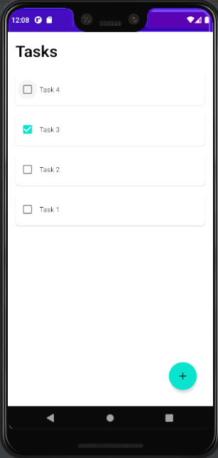
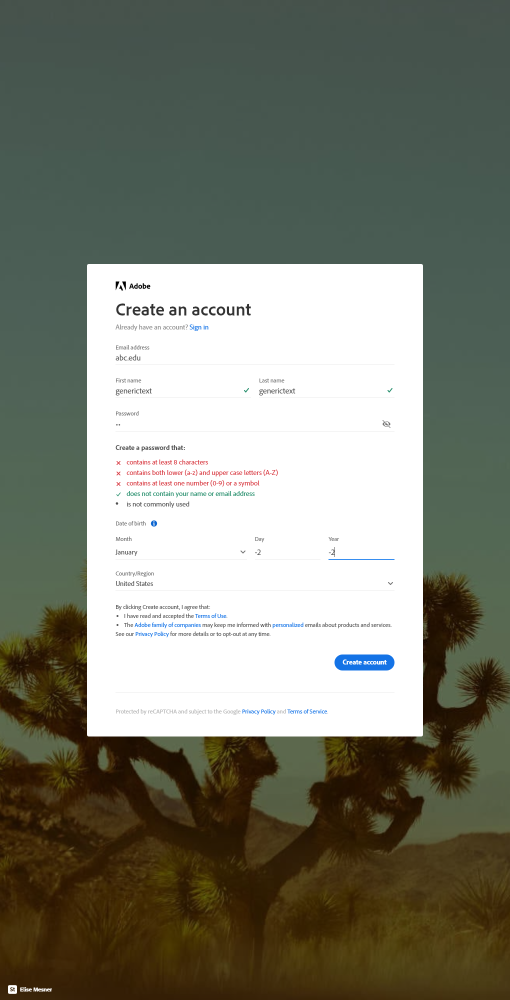
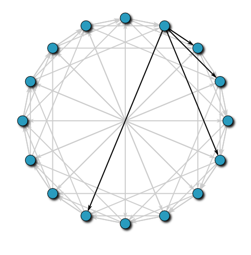
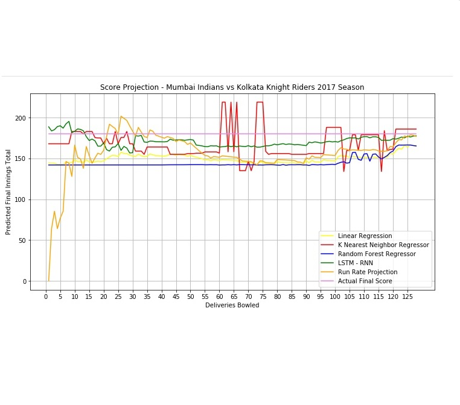
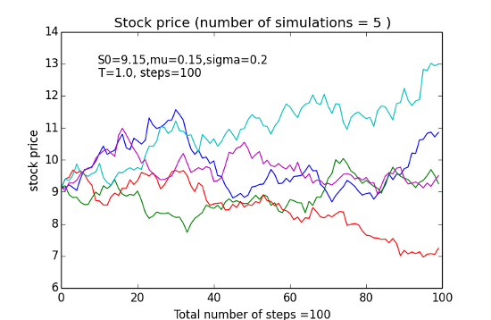
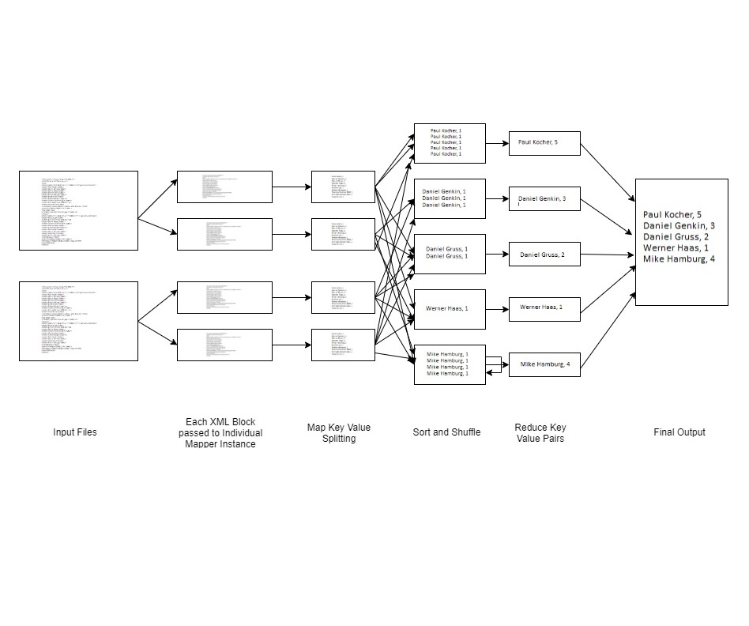
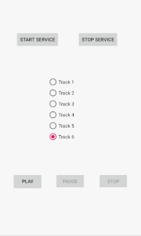

|
|
|
Ajith Nair
I am a tech enthusiast and a passionate programmer who loves solving challenging problems and likes
to keep learning awesome stuff!
I have 4 years of work experience in full-stack software development across different tech-stacks
and frameworks.
I am currently pursuing MS in Computer Science from the University of Illinois at Chicago.
I am also a Graduate Teaching Asisstant for the course Software Development For Mobile Platoforms
using Android.
Email /
Resume /
LinkedIn /
Github
|
|
Education
|
University of Illinois at Chicago
M.S. in Computer Science
August, 2019 - May, 2021 (Expected)
Relevant Coursework:
Cloud Computing, Computer Algorithms, Mobile Application Development, Machine Learning, Information Retrieval, Deep Learning for NLP, Computer Security and Online Privacy, Quantum Computing, Advanced Database Management Systems
|
University of Mumbai
B.E. in Computer Engineering
August, 2011 - July, 2015
Relevant Coursework:
Analysis of Algorithms and Design, Data Structures, Database Management System, Computer Networks, Data Mining, Software Engineering, Operating System, System Security, Compiler Construction.
|
Slalom Build
Software Engineer Intern
June, 2020 - August, 2020
Technologies: AWS SAM, Node JS, TypeScript, React JS, AWS DynamoDB
-
Implemented Client Visit Management system to manage virtual and in-Person customer tours to Build Centres
-
Designed and developed role management module using AWS Cognito User Pool and Authentication triggers.
-
Developed React components with Redux and Hooks for state management to support UI of the role management module.
-
Integrated AWS SAM CLI scripts to generate user for automated API and UI testing in the deployment pipeline.
-
Developed endpoints to manage API requests using AWS Lambda functions with Node JS and DynamoDB tables.
|
Fides Consultancy Services
Software Consutant
January, 2019 - July, 2019
Technologies: .NET MVC, Entity Frameowork, SQL Server, AWS EC2
-
Implemented ERP application to handle freight inventory management, imports and sales request in .NET MVC technology with Entity Framework
-
Designed complex database structures by identifying key drivers and entities in business operations
-
Developed stored procedures, triggers and implemented indexing in SQL Server to facilitate fast retrieval of records from database
-
Managed deployment of application on AWS EC2 instances
-
Established Object Relational Mapping using Entity framework with LINQ
|
Tata Consultancy Services
Systems Engineer
August, 2015 - October, 2018
Technologies: ASP.NET, .NET WebAPI, Entity Frameowork, SQL Server
-
Implemented modules for workflow management software to handle more than 300,000 visa processing requests per month
-
Developed modules for GST integration automating tax calculations using .NET Web Forms with SQL Server
-
Managed regular Backup and Restoration activity of databases hosted on multiple servers
-
Implemented jobs on Database server to automate multiple business critical operations which decreased cost of operations by 10%
|
University of Illinois at Chicago
Graduate Teaching Assistant
January, 2021 - Current
-
Graduate Teaching Assistant for the course CS 478 - Software Development for Mobile Platforms. Course includes topics on Principles, Design Patterns and Components of development of mobile applications on Android Platform.
-
Responsibilities include assisting professor in grading assignment, provide tutoring to students and conduct office hours for Q&A and doubt sessions.
|
|
Projects
These are some of the academic and personal projects that I have really enjoyed working on.
|
|

|
Task Manager
Android, SQLite, .NET Core, Microservices, SQL Server, Docker, Azure Kubernetes Service
This project aims at creating a Daily Task Manager android application with functionalities to add, check (completed tasks), edit and delete tasks
to help you plan your day effectively. The app is synced with a task-manager-api using a background service. The API provides common
endpoints for the mobile app as well as front-end web application.
|
|

|
Fill The Form
Python, Selenium, Beautiful Soup, NLTK, Google Vision AI, MongoDB
The project aims at creating an automated tool to fill web forms with valid input values by inferring the feedback from the website.
The feedback can be in the form of error messages, placeholder and other other different attributes of the different input elements.
|
|

|
Distributed Hash Table Implementation
Akka Http Actor Model, Scala, Docker
This project aims at implementing a Distributed Hash Table that uses the Chord protocol. We use Akka, a toolkit for building highly concurrent, distributed, and resilient message-driven applications to implement Chord. The projects simulates assignment of task from multiple Front Ends (users) and the Worker Nodes using Chord. The implemntation is reselient to network failures, provides necessary logging to see work routing/assignment and messages passed between the nodes.
|
|

|
IPL Prediction
Python, Sklearn, Keras, Regression
The project aims at creating different Regression Machine Learning models and evaluate their performances on dataset to predict the final score of an inning in a Indian Premier League T20 cricket match.
The performances of the models for a specific match is evaluated against the ball-to-ball Run-Rate of the innings.
|
|

|
Monte Carlo Profit Assessment using Apache Spark
Apache Spark, Amazon EMR, Scala
The project aims at creating creating a Spark program for parallel processing of the predictive engine for stock portfolio profit assessment using Monte Carlo simulation in Apache Spark.
|
|

|
DBLP Map Reduce
Apache Hadoop with Scala, AWS EMR
The project aims at creating a map/reduce program for parallel processing of the publically available DBLP dataset to identify differernt statistics pertaining to the authors of the publications like Calculating authorship score of authors, finding Mean, Median and Maximum of the number of co-authors across different articles and publications for an individual authors, finding the number of authors in papers and assigning them to different bins based on range of authors, finding the number of unique collaborations of every authors in the DBLP dataset, etc.
|
|

|
Music Player
Android, Bound Services
The project aims at demonstarting the usage of the concepts of Bound Services in Android. The application compries of a Music player client and Service to play music. The client UI comprises of the list of tracks and controls to play, pause, resume and stop a track.
|
Programming Tutor
-
Volunteered to tutor a student with background in mechanical engineer for the course Fundamentals of Programming in C.
-
Planned and implemented a course schedule which included timely tests, projects and assignments.
-
The student cleared the course with A grade. Before tutoring the student had 2 failed attempts at clearing the examination.
|
|